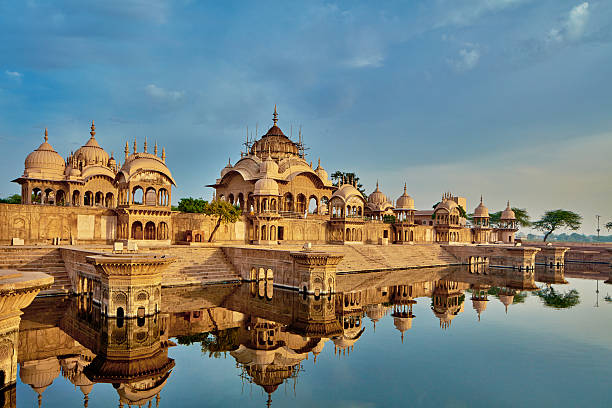
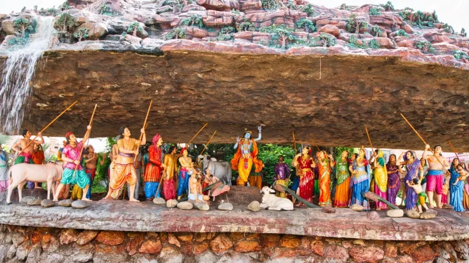
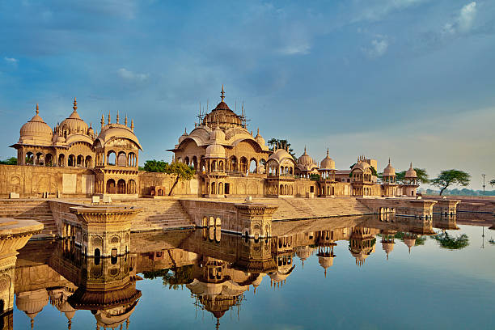
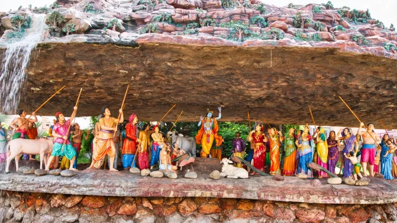

HISTORY
The town of Vrindavan in Mathura District of Uttar Pradesh is as relevant to Hindus of India as Krishna is to the great Indian epic, the Mahabharata. Its religious and mythological connotations are central to the worship of Krishna in the pantheon of Hindu gods. A precocious child, a trusted friend, a performer of miracles, a romantic lover and a saviour to all; Vrindavan is deeply associated with the life and times of Krishna and the tales woven around his life.
Know more

 


